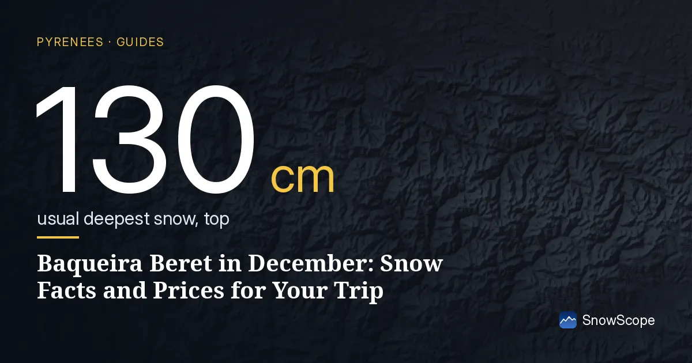

Baqueira Beret ف شهر دجنبر: حقائق على التلج وأثمنة لرحلتك
Baqueira Beret، ف Val d'Aran، من الأسماء الكبار ديال البيريني، ولكن واش اختيار مزيان لدجنبر؟ التاريخ ديال التلج ديالنا كيبين بداية ديال الموسم متواضعة هنا، داكشي علاش السيمانة اللي كتختار مهمة كثر من العادة.
شوف توقعات التلج مباشرة ديال Baqueira Beret فالتطبيق ديال SnowScopeالعلو ديال التلج، التنبيهات والخريطة 3D، فابور.
Val d'Aran والمرتفعات ديالو
Baqueira Beret كاينة ف صبانيا وكتوفر مساحة كبيرة للاكتشاف. المنطقة ديال التزلج فيها 154 كم ديال البيست و 36 مصعد.
المحطة كتمتد من التحت ديال المصاعد ف 1504 م حتى للقمة ف 2600 م، وهادشي كيعطي فرق ف العلو ديال 1096 م.

التلج ف دجنبر بالأرقام
إيلا رجعنا للتاريخ ديال التلج ف 46 شتوة من 1980-81 لـ 2025-26، العلو ديال التلج ف دجنبر غالبا كيكون قليل ف القاعدة. ف 1504 م، العلو المعتاد ف دجنبر هو 8 سم، والعلو المعتاد ف 15 دجنبر هو 9 سم. شتوة دجنبر اللي فيها التلج قليل كتعطي 0 سم أو قل تقريبا ف 1 من كل 10 شتوات، بينما شتوة دجنبر اللي فيها التلج كثير تقدر توصل لـ 37 سم أو كثر تقريبا ف 1 من كل 10 شتوات.
الفوق شوية ف وسط الجبل ف 2052 م، العلو المعتاد ف دجنبر هو 20 سم، مع 19 سم ف 15 دجنبر. ف قمة المصاعد ف 2600 م، العلو المعتاد ف دجنبر هو 30 سم، والعلو المعتاد ف 15 دجنبر هو حتى هو 30 سم. فهاد العلو، شتوة دجنبر اللي فيها التلج كثير كتوصل لـ 77 سم أو كثر تقريبا ف 1 من كل 10 شتوات.
إيلا شفتي النسبة ديال الشتوات اللي فيها 30 سم أو كثر ف وسط الجبل، فهي كتزيد مع الوقت ف الشهر: 22 ف المئة من 1 لـ 7 دجنبر، 30 ف المئة من 8 لـ 14 دجنبر، 35 ف المئة من 15 لـ 21 دجنبر، و 41 ف المئة من 22 لـ 28 دجنبر. ف القمة، النسبة ديال الشتوات اللي فيها 30 سم أو كثر هي 39 ف المئة من 1 لـ 7 دجنبر، 46 ف المئة من 8 لـ 14 دجنبر، 52 ف المئة من 15 لـ 21 دجنبر، و 59 ف المئة من 22 لـ 28 دجنبر.
الثمن، متشاف
رحلات التزلج كتحتاج ميزانية، داكشي علاش خلينا نشوفو التكاليف اللي تأكدنا منها من الموقع الرسمي لموسم 2026-27. تذكرة نهار واحد للكبار مع الكارط اللي كتعاود تشارجي 'Baqueira Pass' كدير 70,00 €. إيلا شريتي 'Baqueira Ticket' عادي للكبار ديال نهار واحد، الثمن هو 74,00 €. لإقامة أطول، 'Baqueira Ticket' للكبار ديال 6 أيام كيدير 359,00 €.
Baqueira ولا Astún-Candanchú
مزيان تقارن Baqueira Beret مع Astún-Candanchú، وجهة أخرى ف صبانيا. Astún-Candanchú فيها منطقة تزلج بـ 35 كم ديال البيست و 17 مصعد، مع علو كيتراوح بين 1659 م و 2272 م، كيعطي فرق ف العلو ديال 613 م.
ف التاريخ ديال التلج عندنا لـ Astún-Candanchú، القاعدة ف 1659 م عندها علو معتاد ف دجنبر ديال 18 سم و 13 سم ف 15 دجنبر. القمة ديالها ف 2272 م عندها علو معتاد ف دجنبر ديال 38 سم و 29 سم ف 15 دجنبر. بالنسبة للتكاليف ف Astún-Candanchú، تذكرة مشتركة للكبار ديال نهار واحد مشريا أونلاين لموسم 26-27 هي 54.50 EUR، بينما ف شباك التذاكر هي 59.50 EUR، وتذكرة مشتركة للكبار ديال 5 أيام مشريا أونلاين هي 237.00 EUR.
التلج الأول والاتجاه
ف التاريخ ديال التلج عندنا، أول نهار معتاد ديال التلج اللي كيبقى ف القاعدة هو 10 نونبر. ف وسط الجبل هو 8 نونبر، وف القمة كيوصل ف 4 نونبر.
بالمقارنة مع الفترات اللي فاتو، المعدل ديال دجنبر ف وسط الجبل كان 17 سم ف وسط أول 15 شتوة (1980-81 لـ 1994-95) و 20 سم ف وسط آخر 15 شتوة (2011-12 لـ 2025-26). الشتوة اللي فاتت ف دجنبر 2025 كان المعدل 9 سم ف القاعدة، 14 سم ف وسط الجبل، و 19 سم ف القمة.
التلج دابا كيبين 0 سم ف القاعدة ووسط الجبل، و 1 سم ف القمة، مع 9 سم ديال تلج جديد متوقع ف الـ 7 أيام الجاية ف القمة. التوقعات ديال التلج الجديد لـ جوج سيمانات لوسط الجبل والفوق كتقول معدل ديال 14 سم مع مجال بين 6 سم لـ 22 سم.
نصايح للي كيتزلجو
- حاول تختار السيمانات اللخرة ديال دجنبر، بحال من 22 لـ 28 دجنبر، فين النسبة ديال الشتوات اللي فيها 30 سم أو كثر كتوصل لـ 59 ف المئة ف القمة.
- سكن الفوق شوية حدا مستويات وسط الجبل والقمة (2052 م لـ 2600 م) فين العلو ديال التلج الطبيعي كيكون مضمون كثر من القاعدة.
- شري الكارط اللي كتعاود تشارجي 'Baqueira Pass' من الموقع الرسمي باش تحصل على ثمن نهار واحد بـ 70,00 € عوض 74,00 €.
- ديما شوف النشرة ديال الانهيارات المحلية قبل ما تخرج للبيست، خصوصا ف بداية الموسم فاش كيكون التلج قليل.
خرائط أخرى (مواقع خارجية)
المراجع والمصادر
- Baqueira Beret, official prices (tarifas), season 26-27 www.baqueira.es/es/tarifas
- Astún, official lift pass prices (tarifas 26-27) astun.com/forfaits/
- SnowScope, December snow at three heights and today's snow map snowscope.app/
على هاد الأرقام
الأرقام ديال التلج: التاريخ ديال التلج ديال SnowScope، 46 شتوة اللي فاتت (1980-81 حتى ل 2025-26) فتلاتة ديال العلوات فكل محطة (موديل ديال اللي فات مصحح بالعلو: تقدير لمنطقة، ماشي قياسات ديال المحطة)؛ أرقام دجنبر محسوبة من العلو اليومي ديال التلج فهاد الشتوات. التلج دابا والتوقعات ديال جوج سيمانات: توقعات SnowScope (من ECMWF و GFS، مجال ماشي وعد). التيليسييجات والبيستات: الخريطة ديال OpenSkiMap. الأثمنة: الصفحات الرسمية اللي لتحت، متشافة نهار 2026-11-13؛ الأثمنة تقدر تتبدل، شوف قبل ما تحجز.
النشرات الرسمية ديال الانهيارات: Lauegi – Conselh Generau d'Aran
كيفاش تستاشهد بهاد المقال
للبحث، التعليم ولا الصحافة: الأرقام والرسومات تقدر تعاود تخدم بيهم بحرية تحت CC BY 4.0 مع هاد الاستشهاد.
SnowScope (2026), Baqueira Beret ف شهر دجنبر: حقائق على التلج وأثمنة لرحلتك, https://snowscope.app/blog/ar/2026/11/baqueira-beret-december-ski-snow-odds-price-2026.html, تشاف ف 2026-11-14
SnowScope (Atlas Labs). (2026, November 14). Baqueira Beret ف شهر دجنبر: حقائق على التلج وأثمنة لرحلتك. SnowScope snow reports. https://snowscope.app/blog/ar/2026/11/baqueira-beret-december-ski-snow-odds-price-2026.html
BibTeX
@misc{snowscope2026baqueiraberetdecemberski,
author = {{SnowScope (Atlas Labs)}},
title = {Baqueira Beret ف شهر دجنبر: حقائق على التلج وأثمنة لرحلتك},
year = {2026},
month = nov,
howpublished = {\url{https://snowscope.app/blog/ar/2026/11/baqueira-beret-december-ski-snow-odds-price-2026.html}},
note = {Published 2026-11-14 13:29 UTC; accessed 2026-11-14}
}· CC BY 4.0 · الطريقة، الداتا والأدوات →
Baqueira Beret: التلج والحرارة حسب العلو، هاد الشتا مقارنة مع اللي فاتت (الأدوات) →
تابع Baqueira Beret
فابور: ميساج ملي يجي التلج، والتوقعات كل صباح.